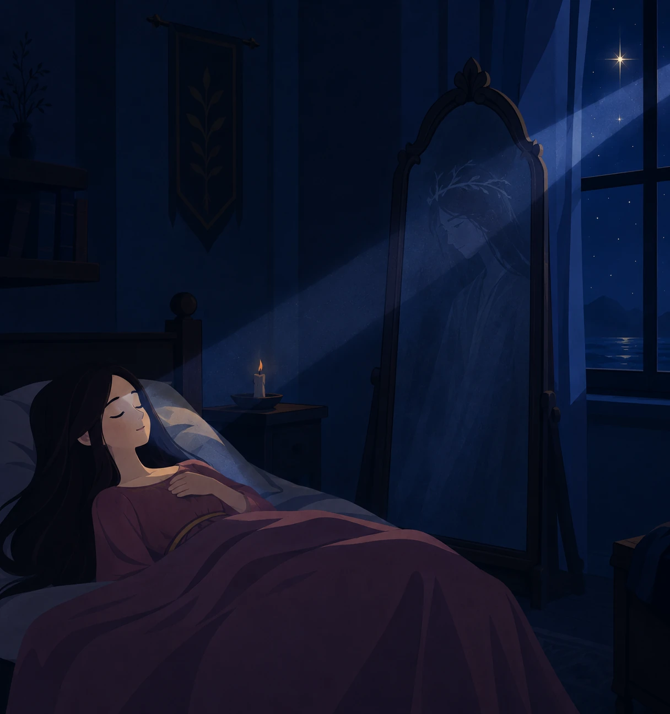
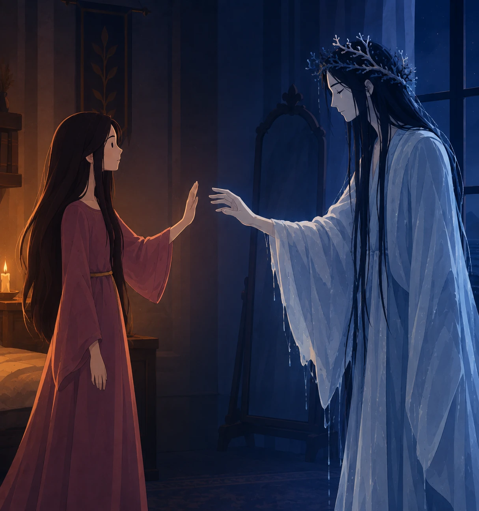
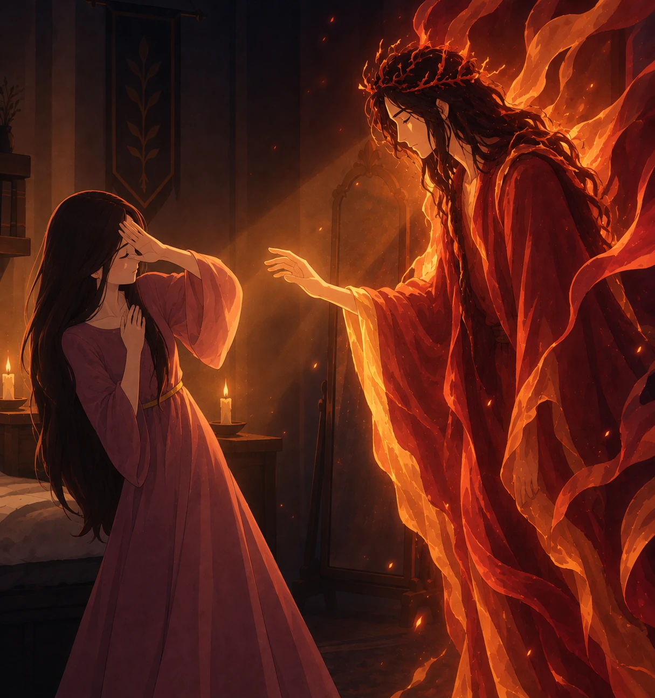
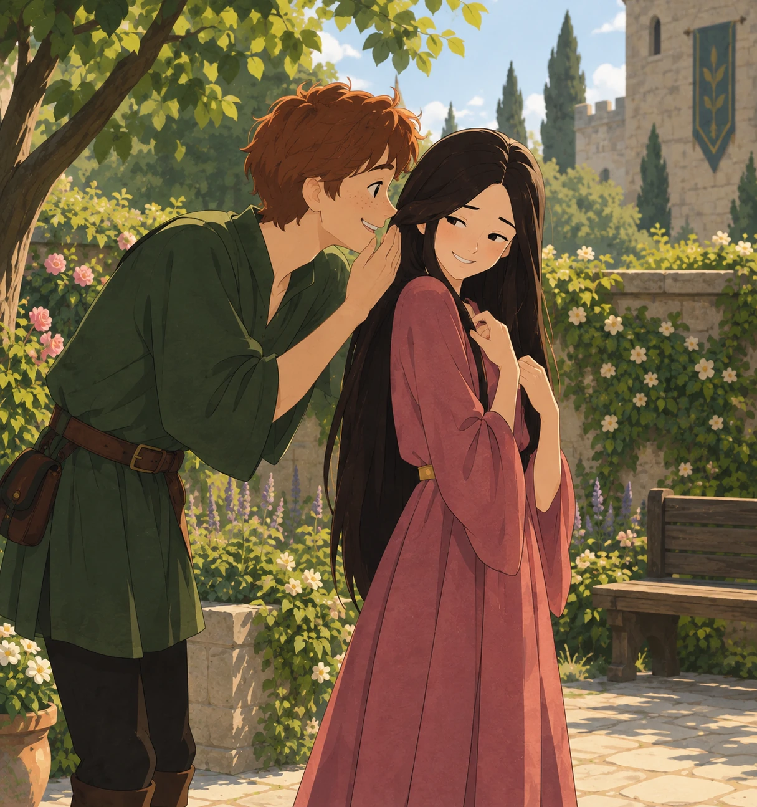

1
A fost odată ca-n povești,
A fost ca niciodată,
Din rude mari împărătești,
O prea frumoasă fată.
Mihai Eminescu · 1883
98 de strofe · 392 de versuri · patru tablouri
Povestea de iubire dintre fata de împărat și Luceafăr. Cele două întrupări – din cer și mare, din soare și noapte – și refuzul lor.
A fost odată ca-n povești,
A fost ca niciodată,
Din rude mari împărătești,
O prea frumoasă fată.
Și era una la părinți
Și mândră-n toate cele,
Cum e Fecioara între sfinți
Și luna între stele.
Din umbra falnicelor bolți
Ea pasul și-l îndreaptă
Lângă fereastră, unde-n colț
Luceafărul așteaptă.
Privea în zare cum pe mări
Răsare și străluce,
Pe mișcătoarele cărări
Corăbii negre duce.
Îl vede azi, îl vede mâni,
Astfel dorința-i gata;
El iar, privind de săptămâni,
Îi cade dragă fata.
Cum ea pe coate-și răzima
Visând ale ei tâmple
De dorul lui și inima
Și sufletu-i se împle.
Și cât de viu s-aprinde el
În orișicare sară,
Spre umbra negrului castel
Când ea o să-i apară.
Și pas cu pas pe urma ei
Alunecă-n odaie,
Țesând cu recile-i scântei
O mreajă de văpaie.
Și când în pat se-ntinde drept
Copila să se culce,
I-atinge mâinile pe piept,
I-nchide geana dulce;
Și din oglindă luminiș
Pe trupu-i se revarsă,
Pe ochii mari, bătând închiși
Pe fața ei întoarsă.
Ea îl privea cu un surâs,
El tremura-n oglindă,
Căci o urma adânc în vis
De suflet să se prindă.
Iar ea vorbind cu el în somn,
Oftând din greu suspină
– „O, dulce-al nopții mele domn,
De ce nu vii tu? Vină!
Cobori în jos, luceafăr blând,
Alunecând pe-o rază,
Pătrunde-n casă și în gând
Și viața-mi luminează!"
El asculta tremurător,
Se aprindea mai tare
Și s-arunca fulgerător,
Se cufunda în mare;
Și apa unde-au fost căzut
În cercuri se rotește,
Și din adânc necunoscut
Un mândru tânăr crește.
Ușor el trece ca pe prag
Pe marginea ferestei
Și ține-n mână un toiag
Încununat cu trestii.
Părea un tânăr voevod
Cu păr de aur moale,
Un vânăt giulgi se-ncheie nod
Pe umerele goale.
Iar umbra feței străvezii
E albă ca de ceară -
Un mort frumos cu ochii vii
Ce scânteie-n afară.
– „Din sfera mea venii cu greu
Ca să-ți urmez chemarea,
Iar cerul este tatăl meu
Și mumă-mea e marea.
Ca în cămara ta să vin,
Să te privesc de-aproape,
Am coborât cu-al meu senin
Și m-am născut din ape.
O, vin'! odorul meu nespus,
Și lumea ta o lasă;
Eu sunt luceafărul de sus,
Iar tu să-mi fii mireasă.
Colo-n palate de mărgean
Te-oi duce veacuri multe,
Și toată lumea-n ocean
De tine o s-asculte.”
– „O, ești frumos, cum numa-n vis
Un înger se arată,
Dară pe calea ce-ai deschis
N-oi merge niciodată;
Străin la vorbă și la port,
Lucești fără de viață,
Căci eu sunt vie, tu ești mort,
Și ochiul tău mă-ngheață.”
Trecu o zi, trecură trei
Și iarăși, noaptea, vine
Luceafărul deasupra ei
Cu razele-i senine.
Ea trebui de el în somn
Aminte să-și aducă
Și dor de-al valurilor domn
De inim-o apucă
– „Cobori în jos, luceafăr blând,
Alunecând pe-o rază,
Pătrunde-n casă și în gând
Și viața-mi luminează!”
Cum el din cer o auzi,
Se stinse cu durere,
Iar ceru-ncepe a roti
În locul unde piere;
În aer rumene văpăi
Se-ntind pe lumea-ntreagă,
Și din a chaosului văi
Un mândru chip se-ncheagă;
Pe negre vițele-i de păr
Coroana-i arde pare,
Venea plutind în adevăr
Scăldat în foc de soare.
Din negru giulgi se desfășor
Marmoreele brațe,
El vine trist și gânditor
Și palid e la față;
Dar ochii mari și minunați
Lucesc adânc himeric,
Ca două patimi fără saț
Și pline de-ntuneric.
– „Din sfera mea venii cu greu
Ca să te-ascult ș-acuma,
Și soarele e tatăl meu,
Iar noaptea-mi este muma;
O, vin', odorul meu nespus,
Și lumea ta o lasă;
Eu sunt luceafărul de sus,
Iar tu să-mi fii mireasă.
O, vin', în părul tău bălai
S-anin cununi de stele,
Pe-a mele ceruri să răsai
Mai mândră decât ele.”
– „O, ești frumos cum numa-n vis
Un demon se arată,
Dară pe calea ce-ai deschis
N-oi merge niciodată!
Mă dor de crudul tău amor
A pieptului meu coarde,
Și ochii mari și grei mă dor,
Privirea ta mă arde.”
– „Dar cum ai vrea să mă cobor?
Au nu-nțelegi tu oare,
Cum că eu sunt nemuritor,
Și tu ești muritoare?”
– „Nu caut vorbe pe ales,
Nici știu cum aș începe -
Deși vorbești pe înțeles,
Eu nu te pot pricepe;
Dar dacă vrei cu crezământ
Să te-ndrăgesc pe tine,
Tu te coboară pe pământ,
Fii muritor ca mine.”
– „Tu-mi ceri chiar nemurirea mea
În schimb pe-o sărutare,
Dar voi să știi asemenea
Cât te iubesc de tare;
Da, mă voi naște din păcat,
Primind o altă lege;
Cu vecinicia sunt legat,
Ci voi să mă dezlege.”
Și se tot duce... S-a tot dus.
De dragu-unei copile,
S-a rupt din locul lui de sus,
Pierind mai multe zile.
Idila pământească dintre Cătălina și Cătălin: iubirea posibilă, de aceeași fire.
În vremea asta Cătălin,
Viclean copil de casă,
Ce împle cupele cu vin
Mesenilor la masă,
Un paj ce poartă pas cu pas
A-mpărătesii rochii,
Băiat din flori și de pripas,
Dar îndrăzneț cu ochii,
Cu obrăjei ca doi bujori
De rumeni, bată-i vina,
Se furișează pânditor
Privind la Cătălina.
Dar ce frumoasă se făcu
Și mândră, arz-o focul;
Ei Cătălin, acu-i acu
Ca să-ți încerci norocul.
Și-n treacăt o cuprinse lin
Într-un ungher degrabă.
– „Da' ce vrei, mări Cătălin?
Ia du-t' de-ți vezi de treabă.”
– „Ce voi? Aș vrea să nu mai stai
Pe gânduri totdeuna,
Să râzi mai bine și să-mi dai
O gură, numai una.”
– „Dar nici nu știu măcar ce-mi ceri,
Dă-mi pace, fugi departe -
O, de luceafărul din cer
M-a prins un dor de moarte.”
– „Dacă nu știi, ți-aș arăta
Din bob în bob amorul,
Ci numai nu te mânia,
Ci stai cu binișorul.
Cum vânătoru-ntinde-n crâng
La păsărele lațul,
Când ți-oi întinde brațul stâng
Să mă cuprinzi cu brațul;
Și ochii tăi nemișcători
Sub ochii mei rămâie...
De te înalț de subțiori
Te-nalță din călcâie;
Când fața mea se pleacă-n jos,
În sus rămâi cu fața,
Să ne privim nesățios
Și dulce toată viața;
Și ca să-ți fie pe deplin
Iubirea cunoscută,
Când sărutându-te mă-nclin,
Tu iarăși mă sărută.”
Ea-l asculta pe copilaș
Uimită și distrasă,
Și rușinos și drăgălaș,
Mai nu vrea, mai se lasă.
Și-i zise-ncet: - „Încă de mic
Te cunoșteam pe tine,
Și guraliv și de nimic,
Te-ai potrivi cu mine...
Dar un luceafăr, răsărit
Din liniștea uitării,
Dă orizon nemărginit
Singurătății mării;
Și tainic genele le plec,
Căci mi le împle plânsul
Când ale apei valuri trec
Călătorind spre dânsul;
Lucește c-un amor nespus
Durerea să-mi alunge,
Dar se înalță tot mai sus,
Ca să nu-l pot ajunge.
Pătrunde trist cu raze reci
Din lumea ce-l desparte...
În veci îl voi iubi și-n veci
Va rămânea departe...
De-aceea zilele îmi sunt
Pustii ca niște stepe,
Dar nopțile-s de-un farmec sfânt
Ce nu-l mai pot pricepe.”
– „Tu ești copilă, asta e...
Hai ș-om fugi în lume,
Doar ni s-or pierde urmele
Și nu ne-or ști de nume,
Căci amândoi vom fi cuminți,
Vom fi voioși și teferi,
Vei pierde dorul de părinți
Și visul de luceferi.”
Zborul cosmic și dialogul cu Demiurgul. Hyperion cere dezlegarea de nemurire și e refuzat.
Porni luceafărul. Creșteau
În cer a lui aripe,
Și căi de mii de ani treceau
În tot atâtea clipe.
Un cer de stele dedesubt,
Deasupra-i cer de stele -
Părea un fulger nentrerupt
Rătăcitor prin ele.
Și din a chaosului văi,
Jur împrejur de sine,
Vedea, ca-n ziua cea de-ntâi,
Cum izvorau lumine;
Cum izvorând îl înconjor
Ca niște mări, de-a-notul...
El zboară, gând purtat de dor,
Pân' piere totul, totul;
Căci unde-ajunge nu-i hotar,
Nici ochi spre a cunoaște,
Și vremea-ncearcă în zadar
Din goluri a se naște.
Nu e nimic și totuși e
O sete care-l soarbe,
E un adânc asemene
Uitării celei oarbe.
– „De greul negrei vecinicii,
Părinte, mă dezleagă
Și lăudat pe veci să fii
Pe-a lumii scară-ntreagă;
O, cere-mi, Doamne, orice preț,
Dar dă-mi o altă soarte,
Căci tu izvor ești de vieți
Și dătător de moarte;
Reia-mi al nemuririi nimb
Și focul din privire,
Și pentru toate dă-mi în schimb
O oră de iubire...
Din chaos, Doamne,-am apărut
Și m-aș întoarce-n chaos...
Și din repaos m-am născut.
Mi-e sete de repaos.”
– „Hyperion, ce din genuni
Răsai c-o-ntreagă lume,
Nu cere semne și minuni
Care n-au chip și nume;
Tu vrei un om să te socoți,
Cu ei să te asameni?
Dar piară oamenii cu toți,
S-ar naște iarăși oameni.
Ei numai doar durează-n vânt
Deșerte idealuri -
Când valuri află un mormânt,
Răsar în urmă valuri;
Ei doar au stele cu noroc
Și prigoniri de soarte,
Noi nu avem nici timp, nici loc,
Și nu cunoaștem moarte.
Din sânul vecinicului ieri
Trăiește azi ce moare,
Un soare de s-ar stinge-n cer
S-aprinde iarăși soare;
Părând pe veci a răsări,
Din urmă moartea-l paște,
Căci toți se nasc spre a muri
Și mor spre a se naște.
Iar tu, Hyperion, rămâi
Oriunde ai apune...
Cere-mi cuvântul meu de-ntâi -
Să-ți dau înțelepciune?
Vrei să dau glas acelei guri,
Ca dup-a ei cântare
Să se ia munții cu păduri
Și insulele-n mare?
Vrei poate-n faptă să arăți
Dreptate și tărie?
Ți-aș da pământul în bucăți
Să-l faci împărăție.
Îți dau catarg lângă catarg,
Oștiri spre a străbate
Pământu-n lung și marea-n larg,
Dar moartea nu se poate...
Și pentru cine vrei să mori?
Întoarce-te, te-ndreaptă
Spre-acel pământ rătăcitor
Și vezi ce te așteaptă.”
Întoarcerea. Luceafărul vede idila pământească, e chemat din nou și răspunde cu refuzul din final.
În locul lui menit din cer
Hyperion se-ntoarse
Și, ca și-n ziua cea de ieri,
Lumina și-o revarsă.
Căci este sara-n asfințit
Și noaptea o să-nceapă;
Răsare luna liniștit
Și tremurând din apă.
Și împle cu-ale ei scântei
Cărările din crânguri.
Sub șirul lung de mândri tei
Ședeau doi tineri singuri
– „O, lasă-mi capul meu pe sân,
Iubito, să se culce
Sub raza ochiului senin
Și negrăit de dulce;
Cu farmecul luminii reci
Gândirile străbate-mi,
Revarsă liniște de veci
Pe noaptea mea de patimi.
Și de asupra mea rămâi
Durerea mea de-o curmă,
Căci ești iubirea mea de-ntâi
Și visul meu din urmă.”
Hyperion vedea de sus
Uimirea-n a lor față;
Abia un braț pe gât i-a pus
Și ea l-a prins în brațe...
Miroase florile-argintii
Și cad, o dulce ploaie,
Pe creștetele-a doi copii
Cu plete lungi, bălaie.
Ea, îmbătată de amor,
Ridică ochii. Vede
Luceafărul. Și-ncetișor
Dorințele-i încrede
– „Cobori în jos, luceafăr blând,
Alunecând pe-o rază,
Pătrunde-n codru și în gând,
Norocu-mi luminează!”
El tremură ca alte dăți
În codri și pe dealuri,
Călăuzind singurătăți
De mișcătoare valuri;
Dar nu mai cade ca-n trecut
În mări din tot înaltul
– „Ce-ți pasă ție, chip de lut,
Dac-oi fi eu sau altul?
Trăind în cercul vostru strâmt
Norocul vă petrece,
Ci eu în lumea mea mă simt
Nemuritor și rece.”




1 / 10